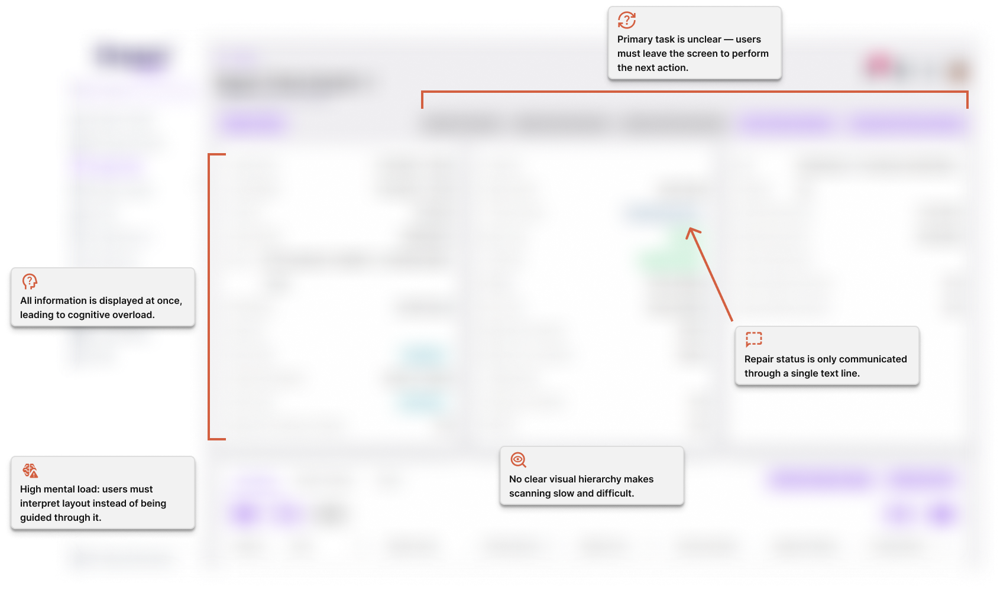
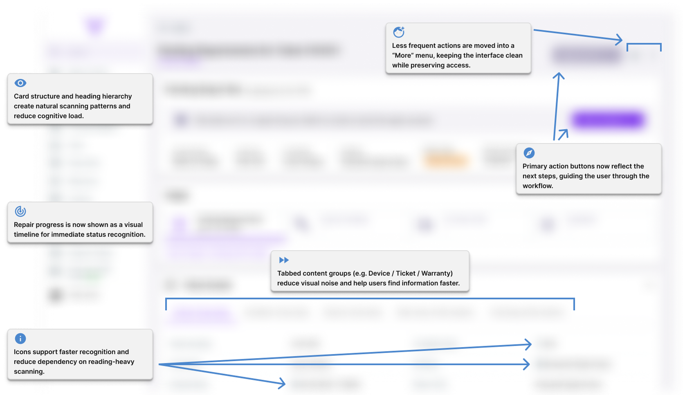

Repair Workflow Usability Redesign
The Repair Ticket Details screen is a core page of Dream™, where K-12 school technicians and support staff review repair status, device information, and next steps in the repair process. The previous layout presented all information at once, without clear hierarchy, which made it difficult for users to quickly locate specific details or understand what to do next. This resulted in slower task completion and an overall sense of cognitive overload.
The goal of this redesign was to create a more intuitive and streamlined experience that organizes information into digestible sections, clarifies the current repair status, and guides users toward their next action. The updated layout introduces structured navigation, visual hierarchy, and a clearer workflow, helping users stay oriented and confident as they move through the repair process.
Context & Problem
Technicians spend a large portion of their day inside the Repair Ticket Details screen, often moving quickly between many tickets. The original layout presented every piece of information at once without visual grouping or guideance, including device specs, ticket notes, warranty details, repair steps, and more. While nothing was technically hidden, the amount of information on the screen created cognitive overload. Users had to scan and rescan to find the single detail they needed, which slowed their workflow and sometimes led to uncertainty.
Additionally, the repair status was displayed as a single line of text, making it difficult to understand where a device was in the overall process. There was no visual sense of progress or clarity about what should happen next. Completing the next step also required leaving the page and navigating elsewhere, which interrupted workflow and added extra clicks. Together, these issues made the experience feel cluttered and unintuitive, even though the functionality existed. The challenge was not only to add new features, but to reorganize and guide the experience so it supported technicians’ work instead of getting in the way.
Goals
- Establish a clear visual hierarchy so that technicians and support staff can quickly identify the repair status, key data, and next steps without scanning through dense text.
- Reduce cognitive load by grouping related information and applying consistent spacing, labeling, and section organization.
- Highlight high-priority information first, such as current status, repair type, and device information, to support faster decision-making during active repairs.
- Improve readability and scannability across desktop and mobile by refining typography, spacing, and component patterns.
Design Process
I began by meeting with the product owner, who has direct communication with technicians and support users. He shared which parts of the current design felt overwhelming and which elements users still relied on. As a frequent user of Dream™ myself, I also experienced the same cognitive overload on the ticket details page: too much information presented at once, and no guidance toward what to do next. Because this page is one of the most frequently used areas in the app, improving clarity and focus was a priority.
In summary, the main pain points and concerns were:
- Too much information surfaced at once, creating cognitive overload.
- No visual hierarchy, making it unclear what to focus on first.
- No guidance toward next steps, forcing users to interpret workflows themselves.
- High frequency of use, meaning even small inefficiencies had a large impact.
Challenge: To explore solutions, I created several low-fidelity layouts. My first approach grouped content into collapsible accordions, which initially reduced visual noise. However, something felt off about it. From a purely UI perspective, the design was solid, but I worried that the accordions would cause additional pain points rather than solving the orginal ones. Through discussion with the product owner, we realized users would likely open all the sections at once, recreating the same scrolling and clutter issues. So, I shifted to a tab-based structure, where content is cleanly separated without increasing complexity.
Thought Process: One reason I didn't think to use tabs was because accordions were used frequently throughout the app. To stay within the same design system, I automatically applied the accordion component to this design. However, I learned that something new or different isn't bad for the design system, as long as it follows the same structure as other components. In this case, the tabs used the standard spacing, color, and typography design tokens applied throughout the app. This design naturally expanded the app's design system.
Throughout the design phase, I shared iterations with the product owner and the development team to ensure the layout aligned with user needs and remained technically feasible. A lead developer suggested incorporating a quick “highlight” section to surface key ticket details, which became a core feature of the redesign.
The result is a layout that significantly reduces cognitive load and supports user decision-making. Critical information is visible at a glance, while additional details remain accessible but unobtrusive. The new design guides users through ticket progress more intuitively and makes the interface feel calm, organized, and purposeful.
Visual Summary (Before & After)
Before - Original Repair Ticket Layout
The previous design has been intentionally blurred to maintain confidentiality and professionalism. I’d be happy to share the full version upon request or during an interview to better illustrate the improvements made.

Tap or click the image above to view it full size in a new tab.
After - Redesigned Repair Ticket Layout
Since this design is not live in Dream™ yet, the details have been intentionally blurred for confidentiality. The main elements of the design are described in callout boxes.

Tap or click the image above to view it full size in a new tab.
Outcome
The redesigned layout clearly reduces visual overwhelm and makes key information easier to identify at a glance. During internal review sessions, the product owner and development team were able to locate status details and next actions much faster than before, even without prior exposure to the new layout. The workflow now feels more guided and intentional, reducing the need to navigate away from the page. Although the redesign has not yet been released to users due to shifting priorities, it has been positively received by the team and is positioned to streamline technician workflows once implemented.